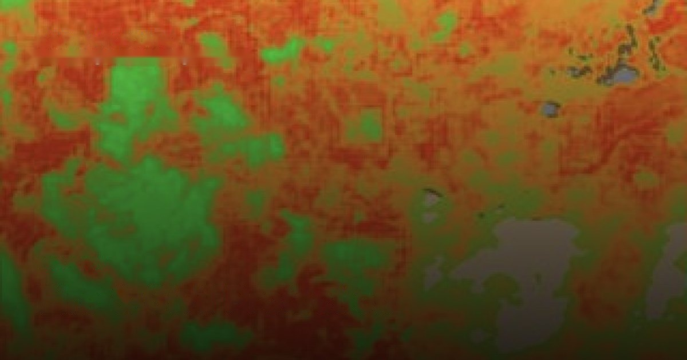
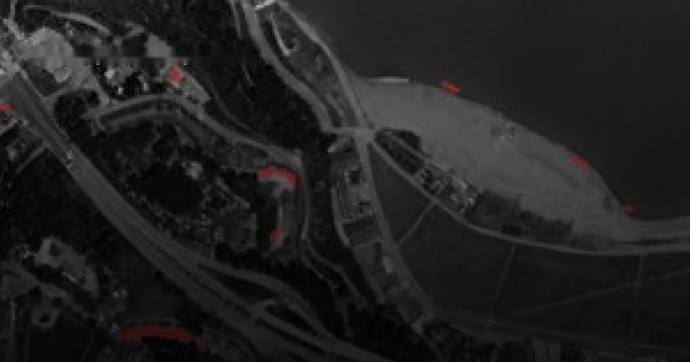
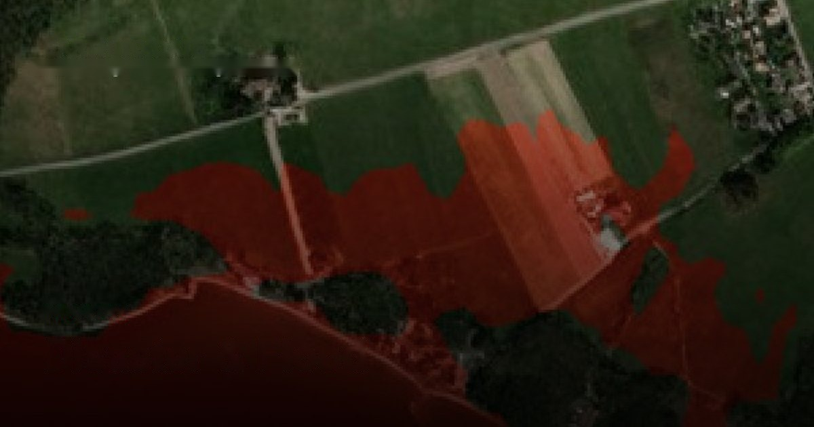

Built around how each industry actually works.
Every industry watches the ground for different reasons. Each page pairs the SkySpera data sources and analytics that serve it — and shows why they beat the alternatives.

Mining & Exploration.
Exploration and mining run on knowing what the ground is doing across huge, remote areas. SkySpera brings targeting, operational monitoring, and compliance into one continuously updated stack.
More info →Agriculture.
The signal that matters in agriculture is subtle and time-sensitive. SkySpera reads the full agronomic picture at 2 m on a tight cycle, across every field you manage.
More info →
Fire & Civil Protection.
Fire risk doesn't start or end with the flames. SkySpera covers fuel, active fire, aftermath, and recovery in one coherent view.
More info →Water & Utilities.
Networks are long, remote, and hard to inspect. SkySpera monitors the whole thing systematically — no truck rolls to find where to look.
More info →
Infrastructure & Construction.
Unpermitted building and unmonitored earthworks are expensive to miss. SkySpera detects new construction and tracks corridors at national scale.
More info →
Disaster & Flood.
Flood impact is decided by terrain, and terrain needs to be accurate. SkySpera models flow over half-metre elevation and watches events as they unfold.
More info →